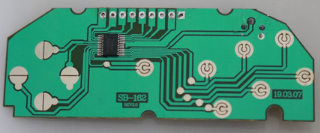
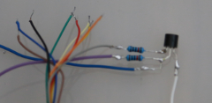
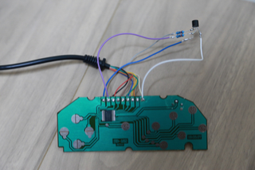
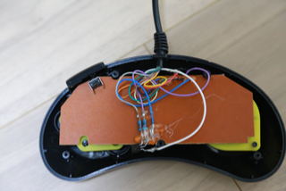

※FS-A1GTの高速モードでは正常に機能しないことを確認。調査中。
配線は、半田付けされているだけでなく、裏面（茶色い面）でグルーガンによって固定されています。
一部の配線はつなぎ替えが必要ですが、１本だけ取るのは難しいので、一旦全部取ってしまいます。
グルーガンも可能な限り取り除いておきます。

追加部品を下記のように半田付けします。

さらに基板に半田付けしていきます。

配線の根元の部分を元通りグルーガンでかためます。
さらに、追加部品がショートしないようにすることと、基板側に貼り付ける目的で、グルーガン使います。
スタートボタンの少ししたあたりに柱があることと、十字ボタン・ABCXYZボタンの位置にも大きな柱があるので
それらの位置を避けつつ、配線も可能な位置にギュギュ〜っと固定します。

あとは、柱で配線を潰さないように注意しながら、ケースを閉じます。
JoyMega のテストツールで全ボタンが反応することを確認して終わりです。
ケース割れてましたが、使い勝手は凄く良いです。
前回作った3Bパッドよりも、サイズ的に手にフィットするのと、意図しない斜め入力が起こりにくくて
使いやすいです。
【外部リンク】
購入した6Bパッド
[前へ]